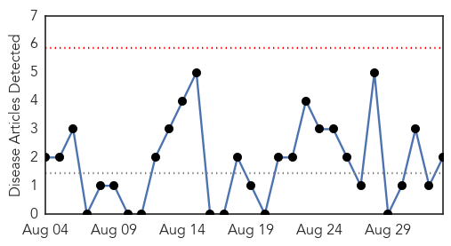
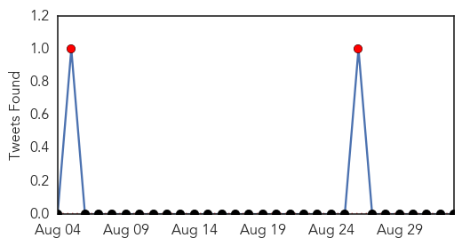
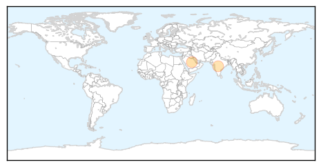

Meningitis
30-Day Web Trend
0 alerts, 0 warnings

30-Day Twitter Trend
2 alerts, 0 warnings

Article Locations
Article Confidences

Top Articles:
Top Tweets:
-
No tweets found for Sep 02, 2014
Dengue Fever
30-Day Web Trend
0 alerts, 0 warnings

30-Day Twitter Trend
2 alerts, 0 warnings
Article Locations

Article Confidences
Top Articles:
- 0.999
- Dengue Fever Outbreak Spread by Mosquitos in Tokyo's Yoyogi Park
- 0.998
- Japan battles first dengue fever outbreak in 70 years
- 0.991
- Local gov't sets traps for virus carrying mosquitoes as dengue fever grips Tokyo - Xinhua
- 0.981
- Dengue fever outbreak infects 34 in Tokyo
- 0.977
- More dengue beds at SCB
- 0.970
- Japan battling first dengue fever outbreak for almost 70 years
- 0.946
- Indoor spray ongoing as case response strategy, says adviser
- 0.922
- Better safe: Anti-dengue measures to be stepped up in September
- 0.918
- Health issues: Two die due to Naegleria and dengue
- 0.871
- Dengue alarm near steel hub
- 0.848
- Sindh govt designates inspectors to curb dengue - Pakistan
- 0.825
- Weekly toll of dengue fever cases sets new high
- 0.814
- Punjab confirms 13 dengue cases
Top Tweets:
- 0.860
- Ebola updates; PAHO alert on dengue and chikungunya in the Americas. HealthSecurity http://t.co/H1JhGDbj22
- 0.619
- Flavivirus news: Less dengue cases due to scanty rainfall - Times of India: Less dengue cases d... http://t.co/BBMskgpDYX pathogenposse